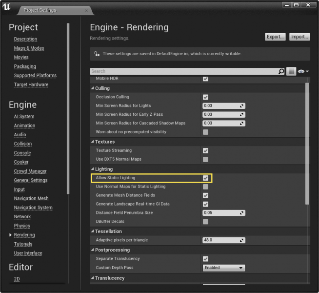
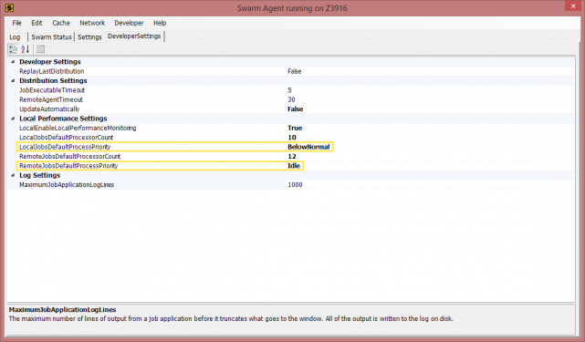

中文 SwarmAgent 常见问题和解决
Contents
- 1 关于本指南
- 2 建议和技巧
-
3
常见问题及解答
- 3.1 “光照系统崩溃”常见错误消息
- 3.2 为什么我的照明构建停滞在 [X]%，或者为什么构建照明如此耗时？
- 3.3 为什么在构建照明时 Swarm Agent 使用了 100% 的 CPU？
- 3.4 照明设置为“可移动/动态”时为什么没有使用 Swarm Agent？
- 3.5 如何使用 GPU 构建照明？或者构建照明时为何没有使用我的 GPU？
- 3.6 如何获取或查看 Swarm Agent 日志？
- 3.7 如何“清空”和“验证”Swarm Agent
- 3.8 我的 Swarm 数据缓存存储在哪里，我可以找到它的位置吗？
- 3.9 “照明构建失败。Swarm Agent 未能启动”表示什么，我该如何解决这个问题？
- 3.10 如何将 Swarm Agent 设置为最高优先级？
- 3.11 为什么 Swarm Agent 没有启动，或者“UnrealLightmass.exe-应用程序错误...”是什么意思？
- 3.12 Swarm Agent 失败，并发生 IO 异常错误
- 3.13 Swarm 日志：System.Net.Socket 错误/Swarm Agent/Coordinator 端口被其他进程使用
关于本指南
本指南旨在介绍使用光照系统 (Lightmass) 在虚幻引擎 4 中构建静态照明的一些最佳实践，并解决执行此类操作时可能遇到的一些常见 Swarm Agent 问题。本指南并不全面，并且会随着引擎版本进行动态更新。
Swarm Agent 程序用于处理单个系统的虚幻光照系统 (Lightmass) 计算，也可以通过 Swarm Coordinator 在网络上将其工作负载分配到其他计算机。在大多数情况下，照明构建不使用网络分布的用户不会注意到 Swarm Agent，因为在照明构建完成后，Swarm Agent 会立即启动、执行任务并关闭。
Swarm Agent 文档和其他链接
_________________________________________________________________________________________________
建议和技巧
_________________________________________________________________________________________________
使用虚幻引擎 4 中的光照系统 (Lightmass) 的一般技巧
缩短构建时间
- 光照系统重要体积 (Lightmass Importance Volume)：
在使用“光照系统重要体积”时，必须知道并理解您可以随意使用这些体积。并不局限于关卡中的单一实例。这些体积背后的理念是聚焦于玩家所在并需要较高质量光照的单个区域中的光子。超出这些体积范围的任何对象只会获得单一光照反射，质量不如体积内生成的照明。通过使用这些体积，可以减少场景所需的计算量，从而帮助提高照明构建。还必须注意的是，这些体积并不能扩展到极限大小。这样会影响使用和用途。
有关更多信息，请参阅以下文档： 光照系统基本知识
- 光照贴图分辨率：
这些分辨率对 Swarm Agent 构建场景所需的时间有重大影响。网格光照贴图分辨率越高，计算并生成这些纹理所需的时间越长。在能够达到满意效果的前提下，最好使用可能的最低分辨率。
不建议将所有静态网格都设置为较高分辨率。如果发现必须将某个网格设置为极高分辨率，可能需要考虑将网格细分为多个部分，这样可以更有效地使用光照贴图 UV，或者只需更合理地使用 0,1 UV 空间，重组光照贴图 UV 来达到更好的效果。
- 植物叶子工具：光照贴图分辨率：
对于使用植物叶子工具放置的实例化静态网格，这些资产将使用静态网格的默认设置的光照贴图分辨率。这在构建照明时很可能会产生警告。最好转至植物叶子工具的“实例设置”并使用较低值 4 或 8 启用光照贴图分辨率。对于实例化静态网格，该值应足以满足需要，这取决于场景中已经绘制的静态网格实例数量。这些实例会根据集群大小汇集到单一光照贴图中。

- 资产和光线数量：
场景中静止或静态的投射阴影的资产数量和投影光线数量也会计入在使用光照系统时需要的计算数量。这些计算会直接影响 Swarm Agent 需要处理的内容量，本质上影响的是照明构建的时长。
- 系统规格：
Swarm Agent 是非常占用 CPU 资源的进程，需要执行大量计算。系统规格可能会导致该进程加速或减速，甚至导致光照系统崩溃。快速的 CPU 可以帮助提高计算速度。所需 RAM 量取决于场景大小、光线数量和计算的资产数量。如果耗尽内存，光照系统将会崩溃。这通常会被报告为错误，但仅仅是因为系统设置有一定的局限性。请参阅以上其他提示，帮助减少发生此错误的几率，或者增大系统 RAM。 _________________________________________________________________________________________________
构建大型世界
如果项目要使用较大世界，甚至是包含数千个资产、实例化植物叶子之类的完全开放的世界，通常不建议使用光照系统对此类型的世界构建照明。
有人或许会争论道“静态照明性能更好，效果更佳”。的确如此，但有一定的限制。这并不是说静态照明不能用于较大世界，只是不是理想的工具，原因与它用来存储所有生成的光照贴图纹理的内存以及最初用来构建关卡所需的内存量有关。
较大的世界和开放世界通常会使用动态照明。这似乎是有点违反常理，因为与动态照明相比，静态照明在运行时是没有开销的。这也是事实，但你不用计算阴影，只需要考虑要为所有这些网格加载的光照贴图纹理。最好主要使用动态照明，然后分析 CPU 和 GPU 是否会出现任何瓶颈，测量性能，优化游戏。
有关更多分析信息，请参阅以下文档和 YouTube 支持流媒体视频：
_________________________________________________________________________________________________
常见问题及解答
_________________________________________________________________________________________________
“光照系统崩溃”常见错误消息
“耗尽内存”

正如说明所述，该崩溃的原因是没有足够的内存为场景构建照明。
尝试步骤：
- 在可游戏区域周围添加光照系统重要体积。（请参阅以上“技巧”部分了解更多信息）
- 减少场景中的网格数量
- 降低不需要高质量阴影的网格的光照贴图分辨率。
- 如果使用植物叶子工具，先使用 4 或 8 光照贴图分辨率，因为网格会汇集到一个纹理图集中。
- 清空和验证缓存
- 增大可用的虚拟内存量。将其视为 RAM 较低时的溢出。但不要将该虚拟内存当做额外的 RAM。
- 增加系统的 RAM。
“断言失败：(Index>=0)&(Index<ArrayNum))”

尝试步骤：
- 清空和验证 Swarm Agent 缓存
_________________________________________________________________________________________________
为什么我的照明构建停滞在 [X]%，或者为什么构建照明如此耗时？
如果发现照明需要很长的构建时间，或者不确定照明构建进程是否冻结，只需打开 Swarm Agent 程序，查看正在运行的进程即可。
打开 Swarm Agent 之后，可以查看“Swarm 状态 (Swarm Status)”选项卡。您可以在这里查看照明构建处理的进度，这里有一个百分比条，表示照明构建当前的处理进度。

尝试步骤：
- 减少场景中的网格和/或光线数量
- 使用照明系统重要体积
- 降低网格的光照贴图分辨率
- 使用多台计算机，利用 Swarm Agent 和 Swarm Coordinator 分配照明构建
- 使用推荐的或更强大的 CPU
_________________________________________________________________________________________________
为什么在构建照明时 Swarm Agent 使用了 100% 的 CPU？
使用 Swarm Agent 和光照系统构建照明的进程非常占用 CPU 资源。根据场景中的对象数量、世界的大小、照明质量、光照贴图分辨率以及与此有关的一系列其他进程，这可能会增加构建照明所需的 CPU 资源量。
您可以调整用于本地和远程作业的处理器数量，具体操作如下：
在 Swarm Agent 的 设置 (Settings) 选项卡上，找到 ShowDeveloperMenu 选项，并将值设置为 True 。

启用该设置后，就会看到一个名为
DeveloperSettings
的新选项卡。在这里可以更改
LocalJobDefaultProcessorCount
或
RemoveJobDefaultProcessorCount
。
_________________________________________________________________________________________________
照明设置为“可移动/动态”时为什么没有使用 Swarm Agent？
有一个常见的误区是虚幻引擎 4 中的所有照明都需要构建。但事实并非如此。产生这个误区的原因可能是，工具栏中的 构建 (Build) 按钮仅与构建照明关联，而实际上还有很多其他的进程，例如构建几何结构、导航网格等诸如此类。因此，如果您担心在此看到某种形式的操作，知道这里不仅仅是在构建照明会让您放心。
光照系统在需要使用烘焙/预先计算照明时使用 Swarm Agent，正因如此才能处理“静态/静止照明移动”。
注： 如果您已经决定在游戏中仅使用“可移动/动态照明”，最好先通过以下方法禁用预先计算照明。
- 要逐个地图地禁用该选项，选中 全局设置 (World Settings) > 光照系统 (Lightmass) > 不使用与预先计算的照明 (Force No Precomputed Lighting) 。
- 要对整个项目禁用静态照明，取消选中 菜单 (Menu) > 窗口 (Window) > 项目设置 (Project Settings) > 渲染 (Rendering) > 照明 (Lighting) > 允许静态照明 (Allow Static Lighting) 。
-

-

________________________________________________________
如何使用 GPU 构建照明？或者构建照明时为何没有使用我的 GPU？
构建照明主要使用 CPU，仅在导出流程时使用 GPU。
虽然也可以使用 GPU 进行光照系统计算，但目前没有从事这方面的开发工作，短期内也无此计划。理想的解决方案是在预览时使用 GPU 进行实时渲染的照明算法，但之后准备好构建时，可以使用该同一算法烘焙到光照贴图中。但是，这种方法也要面临一些挑战。这样很难按比例缩小编辑器，所有当前的 GI 方法都必须重新编写，无法获得高品质的最终结果，而且由于 GPU 上的负载，会导致编辑器变得十分不稳定。众所周知，负载较重时 GPU 十分不稳定。
_________________________________________________________________________________________________
如何获取或查看 Swarm Agent 日志？
您可以转至 日志 (Log) 选项卡查找 Swarm Agent 的日志。
打开“日志 (Log)”选项卡时，应该看到类似以下图像的界面。如果看到空白日志，很可能表示之前没有为需要光照系统计算的任何静态/静止照明构建照明。该日志可能会指出照明构建的问题。
要获取先前照明构建日志，可以查看 的位置。
如果日志中的信息不足以得出结论，请尝试更改日志的详细程度。可以在
设置 (Settings)
选项卡 >
详细程度 (Verbosity)
中更改。这样会更改发送到日志的信息量。
可用选项如下：
- 静默 (Silent)
- 严重 (Critical)
- 简单 (Simple)
- 参考 (Informative)（默认设置）
- 复杂 (Complex)
- 详细 (Verbose)
- 超详细 (Extra Verbose)
- 极其详细 (Super Verbose)

_________________________________________________________________________________________________
如何“清空”和“验证”Swarm Agent
Swarm Agent 的 缓存 (Cache) 下拉菜单有两个选项，一个是 清空 (Clean) ，一个是 验证 (Validate) （请参加下图）。
- 清空 (Clean)： 该选项会根据用户请求清空缓存。
- 验证 (Validate)： 该选项会验证所有缓存条目，并更新为最新数据。
注： 清空和验证缓存有时能解决 Swarm Agent 在构建照明时可能遇到的问题。

_________________________________________________________________________________________________
我的 Swarm 数据缓存存储在哪里，我可以找到它的位置吗？
打开 Swarm Agent，转至 设置 (Settings) 选项卡可以查看和更改 Swarm 缓存的位置。在 缓存设置 (Cache Settings) 下拉菜单中，会看到 缓存文件夹 (CacheFolder) 。（请参见下图）
您可以将右侧的文件路径更改为所需的任何位置。还可以选择更改最大缓存大小设置。该值以 GB 为单位。另外一个最大作业数设置用于设置要保留的输出日志数。

_________________________________________________________________________________________________
“照明构建失败。Swarm Agent 未能启动”表示什么，我该如何解决这个问题？

如果看到该问题，表示有若干原因导致 Swarm Agent 未能初始化。
Swarm 未能启动的可能原因：
- 同时打开了多个 Swarm Agent 实例
- 打开“任务管理器”，并确保没有多个 Swarm Agent 进程正在运行
- 关卡和/或资产受损
- 关闭防火墙/防病毒软件
- 重启编辑器
- 硬盘空间
- 引擎存在安装或损坏问题
- 虚幻光照系统存在源代码构建问题
尝试步骤：
- 尝试重启虚幻引擎 4 和/或计算机。
- 检查任务栏和/或任务管理器，确认是否有多个 Swarm Agent 实例正在运行。关闭所有或多个实例。
- 禁用防火墙和/或防病毒软件。如果该操作起作用了，请确保添加 SwarmAgent.exe 例外
- 按部就班地检查和移除关卡中的网格，确认是否是某个网格导致发生该失败。这属于蛮力手段，应该在将范围缩小到类似原因时作为最后的尝试方法。
- 在已知关卡中利用有用的资产测试构建照明，例如“起步内容”中的默认关卡或者某个模板地图。
-
转至 Epic Games 启动程序 > 库 > 选择引擎版本 > 验证来验证引擎（请参见下图）

- 重新安装引擎
如果从源代码构建
- 重新构建虚幻光照系统解决方案
如果已经试过这些步骤，但仍遇到该问题，请在 AnswerHub 上发布问题，并包含您已经尝试过的步骤以及重现该问题的足够步骤。
_________________________________________________________________________________________________
如何将 Swarm Agent 设置为最高优先级？
如果打开 Swarm Agent 并发现需要一点时间才会打开 Swarm 以进行处理，可以调整下列设置，以便更快速地启动该进程。
- 打开 Swarm Agent > 设置 (Settings) 选项卡
- 将 ShowDeveloperMenu 设置为 True
- 此时会出现一个新的选项卡，名为 "DeveloperSettings"
- 将 LocalJobsDefaultProcessPriority 更改为 BelowNormal
- 将 RemoteJobsDefaultProcessPriority 更改为 Idle
-

-

_________________________________________________________________________________________________
为什么 Swarm Agent 没有启动，或者“UnrealLightmass.exe-应用程序错误...”是什么意思？
如果看到弹出该问题，表示 Windows 中有某些原因导致该应用程序无法打开，这并不是直接由虚幻引擎 4 所导致的。
如果使用的是 4.9 或更早版本，确保安装了最新的 VS2013 相关软件，卸载不再需要的任何相关软件。
如果使用的是 4.10 或更高版本，需要安装 VS2015 相关软件。
可以从 Microsoft 网站下载 Visual Studio 相关软件：
VS2013： http://www.microsoft.com/en-us/download/details.aspx?id=40784
VS2015： https://www.microsoft.com/en-us/download/details.aspx?id=48145
如果仍会遇到此类问题，尝试使用免费的应用程序 Dependency Walker 对可能导致 UnrealLightmass.exe 无法启动的任何 DLL 问题进行故障排除。
您可以从以下网站下载 Dependency Walker： http://www.dependencywalker.com/
_________________________________________________________________________________________________
Swarm Agent 失败，并发生 IO 异常错误
当看到该错误时，可能需要查看 Swarm Agent 日志，了解更多详细信息。
可能会更正该问题的步骤：
- 检查关卡，确认没有为任何 NULL 资产构建照明。这些可能是没有参考的资产。您可以在全局大纲 (World Outliner ) 中进行查看，在这里选择资产时，会在“细节 (Details)”面板中看到没有分配资产。
_________________________________________________________________________________________________
Swarm 日志：System.Net.Socket 错误/Swarm Agent/Coordinator 端口被其他进程使用
在某些情况下，Swarm Agent 无法启动或分发构建，因为 Swarm Agent 和 Swarm Coordinator 需要的端口 8008 和 8009 已被其他进程使用。
注： 以下步骤将帮助您识别问题，但未必能解决问题，因为这超出了 Swarm Agent/Coordinator 故障排除的范围，属于 Windows 端口分配问题的解决范畴。”
Swarm Agent 日志中的常见错误：
- 异常详细信息：System.Net.Sockets.SocketException (0x80004005)：由于目标机器主动拒绝 192.168.1.34:8009，因此无法建立连接
您可以下载免费应用 TCPView，以便快速识别哪些端口被哪些进程使用。您可以从 https://technet.microsoft.com/en-us/sysinternals/tcpview.aspx 下载该应用

- 打开 TCPView 时，需要单击 Local Port 选项卡，这样会按数字顺序列出端口。
- 然后单击菜单栏中的 View，并将 Update Speed 设置为 5 秒或 Paused。在不快速更新和使用端口和进程的情况下，更方便查看。
- 向下滚动，查看哪些应用程序正在使用端口 8008 和 8009。
现在已经识别了使用这两个端口的进程，它们可能不是 Swarm Agent/Coordinator，您需要研究如何重新分配端口地址，让 Swarm Agent/Coordinator 使用这两个端口，而不是被其他程序使用。
如果发现 Swarm Agent/Coordinator 正在使用这两个端口，可能需要尝试以下操作：
- 以极其详细模式查看日志，确认是否存在任何问题。
- 重新安装最新的 .NET 框架